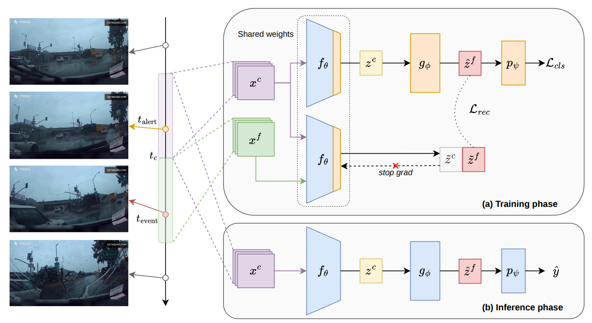
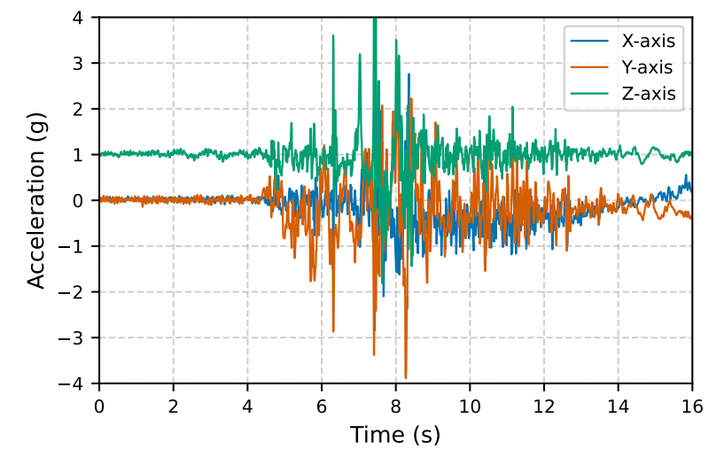
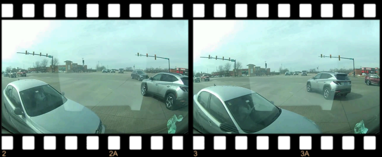
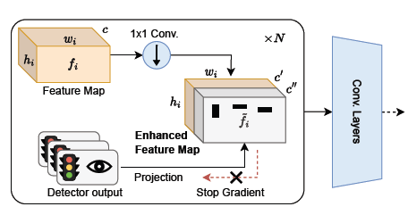
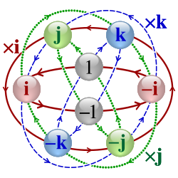

FLaRA: Predicting Future Latent Representations for Accident Anticipation
L. Caselli, T. Trinci, T. Bianconcini, S. Magistri, L. Taccari, F. Sambo, A.D. Bagdanov (2026).
Preprint, Accepted at International Conference on Intelligent Transportation Systems (ITSC)

VZCrash: A Large-Scale IMU Dataset of Ego-Vehicle Crashes
T. Bianconcini, H. P. Monteagudo, A. Pjetri, T. Trinci, L. Taccari (2026).
Preprint, Accepted at International Conference on Intelligent Transportation Systems (ITSC)

Enhancing Multimodal Large Language Models for Safety-Critical Driving Video Analysis
T. Trinci, H. P. Monteagudo, L. Taccari (2026).
Preprint, Accepted at International Conference on Intelligent Transportation Systems (ITSC)

Color is not enough: dataset and method for identifying relevant traffic lights in driving scenes
T. Trinci, S. Magistri, T. Bianconcini, L. Sarti, L. Taccari, F. Sambo (2025).
IEEE Transactions on Intelligent Transportation Systems, pp. 1116-1125

EFC++: Elastic Feature Consolidation with Prototype Re-balancing for Cold Start Exemplar-free Incremental Learning
S. Magistri, T. Trinci, A. Soutif-Cormerais, J. van de Weijer, A.D. Bagdanov (2025).
[Under Review since July 2024]

How green is continual learning, really? Analyzing the energy consumption in continual training of vision foundation models
T. Trinci, S. Magistri, R. Verdecchia, A.D. Bagdanov. (2024).
Computer Vision – ECCV 2024 Workshops, Part XXII, pp. 300-317.

Elastic feature consolidation for cold start exemplar-free incremental learning
S. Magistri, T. Trinci, A. Soutif-Cormerais, J. van de Weijer, A.D. Bagdanov (2024).
The Twelfth International Conference on Learning Representations (ICLR).

Cross-Model Temporal Cooperation Via Saliency Maps for Efficient Recognition and Classification of Relevant Traffic Lights
T. Trinci, T. Bianconcini, L. Sarti, L. Taccari, F. Sambo. (2023).
International Conference on Intelligent Transportation Systems (ITSC), pp. 2758-2763.

Zeros of slice functions and polynomials over dual quaternions
G. Gentili, C. Stoppato, T. Trinci (2021).
Transactions of the American Mathematical Society, pp. 5509-5544.